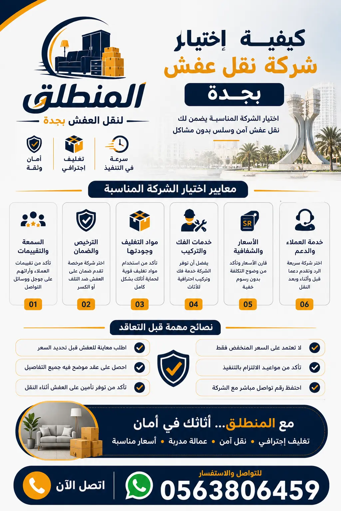

اختيار شركة نقل عفش احترافية ليس مجرد قرار عادي؛ إنه استثمار في سلامة أثاثك وراحة بالك. في هذا الدليل، سنساعدك على معرفة كيف تختار شركة نقل أثاث تضمن لك خدمة آمنة بأسعار عادلة.
خدمة 24 ساعة – معاينة مجانية
اطلب معاينةعندما تقرر نقل أثاث منزلك أو مكتبك، فإن اختيار شركة نقل عفش ليست مجرد خطوة لوجستية، بل هي قرار يؤثر بشكل مباشر على سلامة ممتلكاتك، وميزانيتك، وراحتك النفسية. كثير من الأشخاص يقعون في فخ شركات نقل العفش غير الموثوقة، مما يؤدي إلى خسائر مادية أو أضرار في الأثاث أو تأخير في الجداول الزمنية. لذلك، فإن فهم كيف تختار شركة نقل أثاث هو المفتاح لتجنب هذه المشكلات. شركة المنطلق تدرك أهمية هذا القرار، وتقدم لك هذا الدليل الشامل لتكون على دراية بكل معايير الاختيار.
إن نقل العفش ليس مجرد تحميل وتفريغ؛ إنه عملية متكاملة تشمل التغليف، الفك، التركيب، والنقل الآمن. لذا، فإن شركة نقل عفش بجدة أو في أي مدينة تحتاج إلى خبرة وكفاءة عالية. من خلال هذا الدليل، ستتعرف على نصائح اختيار شركة نقل عفش التي تضمن لك التعامل مع شركة نقل عفش موثوقة وشركة نقل أثاث مضمونة. تذكر أن أفضل شركة نقل عفش هي التي تضع جودة الخدمة وسعادة العميل فوق كل اعتبار، وهذا ما نؤمن به في شركة المنطلق.

لكي تختار أفضل شركة نقل عفش، يجب أن تضع عدة معايير رئيسية في اعتبارك. أولاً: عدد سنوات الخبرة – كلما زادت الخبرة، زادت القدرة على التعامل مع الطوارئ والأثاث الثقيل. ثانياً: جودة التغليف – شركة النقل الجيدة تستخدم مواد تغليف احترافية لحماية الأثاث من الخدوش والكسر. ثالثاً: احترافية العمال – فريق العمل يجب أن يكون مدرباً على الفك والتركيب والتحميل والتفريغ. رابعاً: الالتزام بالمواعيد – عامل أساسي في نجاح عملية النقل. خامساً: الأسعار – ليست الأقل دائماً هي الأفضل، ولكن يجب أن تكون أسعار نقل العفش مناسبة مع الخدمات المقدمة. سادساً: الضمان – الشركة الموثوقة تقدم ضماناً على الأثاث أثناء النقل. سابعاً: خدمة العملاء – سهولة التواصل والاستجابة السريعة تعكس مدى احترافية الشركة. ثامناً: المعدات والمركبات – توفر سيارات نقل عفش مجهزة وونش رفع الأثاث يسهل عملية النقل ويقلل من الأضرار. تاسعاً: سرعة التنفيذ – الشركة القادرة على إنجاز المهمة في الوقت المحدد دون تأخير. كل هذه المعايير تجتمع في خدماتنا لتجعلنا الخيار الأمثل.
عند تقييمك لشركة النقل، اسأل عن معايير اختيار شركة نقل عفش التي تتبعها، وتأكد من توفر جميع العناصر السابقة. يمكنك أيضاً زيارة مدونتنا عن شركات نقل العفش بجدة لمزيد من المعلومات. وتذكر أن اختيار شركة نقل أثاث يحتاج إلى وقت وتدقيق، فلا تتعجل في القرار. تواصل معنا للحصول على استشارة مجانية حول معايير الاختيار.
كيف تختار شركة نقل أثاث ذات خبرة حقيقية؟ ابدأ بمراجعة موقع الشركة الإلكتروني، وابحث عن صفحة "من نحن" التي تبرز تاريخها وإنجازاتها. شركة المنطلق تفتخر بخبرة تزيد عن 10 سنوات في مجال نقل العفش. ثانياً، اقرأ تقييمات العملاء على منصات مثل جوجل وتويتر وفيسبوك. التقييمات الإيجابية المتكررة تعكس جودة الخدمة. ثالثاً، اطلب من الشركة تقديم مراجع أو نماذج من أعمال سابقة. الشركة الموثوقة لا تتردد في مشاركة قصص نجاحها. كما يمكنك الاطلاع على مدونتنا التي تحتوي على مقالات تثقيفية حول نقل العفش، مما يدل على خبرتها. لا تنسَ أن أفضل شركة نقل عفش هي التي تضع العميل في المقام الأول وتعمل على تحسين خدماتها باستمرار.
إن قراءة آراء العملاء تمنحك فكرة واضحة عن نقاط القوة والضعف في الشركة. ابحث عن تعليقات تتحدث عن الالتزام بالمواعيد، ونظافة العمال، ودقة الفك والتركيب، وجودة التغليف، وسلاسة التواصل. إذا وجدت شكاوى متكررة عن تأخر أو أضرار، فابتعد عن هذه الشركة. في المقابل، إذا كانت التقييمات تشيد بالاحترافية والشفافية، فهذه علامة جيدة. في شركة المنطلق، نعتبر تقييمات عملائنا مرآة لخدماتنا، ونعمل دائماً على تحسين أدائنا بناءً على ملاحظاتهم. نحن ندعوك لزيارة صفحتنا عن أفضل شركة نقل عفش بجدة لترى بنفسك ما يقوله عملاؤنا عنا.
من الأخطاء الشائعة عند اختيار شركة نقل عفش هو إغفال خدمات التغليف والفك والتركيب. فالتغليف الجيد هو الدرع الأول لحماية أثاثك من الصدمات والغبار والخدوش. اسأل الشركة عن نوعية مواد التغليف التي تستخدمها: هل تستخدم البلاستيك الفقاعي ثلاثي الطبقات؟ هل توفر صناديق كرتونية مقواة للأجهزة الحساسة؟ هل تغطي الأرائك بأغطية قماشية مقاومة للماء؟ كل هذه التفاصيل تجعل الفرق بين نقل أثاث ناجح وفاشل. في خدمات تغليف العفش بجدة التي نقدمها، نستخدم أحدث المواد وأفضل التقنيات لضمان وصول أثاثك بحالة ممتازة.
أما بالنسبة لـ الفك والتركيب، فهي خدمة لا غنى عنها، خاصة للأثاث الكبير مثل غرف النوم والمجالس والمطابخ. يجب أن تتأكد من أن الشركة توفر نجارين فك وتركيب أثاث محترفين يستخدمون أدوات حديثة ويفهمون كيفية تفكيك وإعادة تركيب كل قطعة بدقة. يمكنك الاطلاع على خدمة فك وتركيب الأثاث بجدة التي نقدمها، والتي تشمل ترقيم القطع وتغليف المسامير في أكياس مخصصة. في حزمة النقل مع التغليف، نوفر لك خدمة متكاملة تشمل كل شيء، مما يوفر عليك الوقت والجهد. تأكد من أن الشركة التي تتعاقد معها تقدم هذه الخدمات بشكل احترافي، لأنها تحدد مدى سلامة أثاثك واستعادة شكله الأصلي بعد النقل.
من أهم عناصر كيفية اختيار شركة نقل عفش هي التحقق من أسطول النقل والمعدات. فالسيارات القديمة أو غير المجهزة قد تتسبب في تلف الأثاث أو تأخير في النقل. يجب أن تمتلك الشركة سيارات نقل عفش مجهزة بأنظمة تثبيت حديثة، وأرضيات غير قابلة للانزلاق، وأغطية واقية، وأنظمة هيدروليكية لتسهيل التحميل والتفريغ. في مدونتنا عن سيارات نقل العفش بجدة، نستعرض أحدث الموديلات التي نستخدمها. أيضاً، وجود ونش رفع الأثاث أمر بالغ الأهمية، خاصة في المباني العالية أو عند وجود أثاث ثقيل لا يمكن حمله يدوياً. الونش يوفر الوقت والجهد ويقلل من خطر التعرض للإصابات أو تلف الأثاث. اسأل الشركة عن حجم سياراتها وما إذا كانت توفر ونشاً كهربائياً أو هيدروليكياً.
في شركة المنطلق، نمتلك أسطولاً متنوعاً من الشاحنات المغلقة والمفتوحة، بالإضافة إلى أوناش حديثة تصل إلى الطوابق العليا. نحن نؤمن أن المعدات الجيدة هي نصف الخدمة الجيدة، ولذلك نستثمر باستمرار في تحديث مركباتنا وأدواتنا. يمكنك أيضاً الاطلاع على صفحة الخدمات لمعرفة المزيد عن المعدات التي نستخدمها. تذكر أن الشركة التي تمتلك سيارات نظيفة ومجهزة تعكس احترافيتها واهتمامها بالتفاصيل، وهذا ما يجعلها شركة نقل أثاث مضمونة. لا تتردد في طلب مشاهدة السيارات قبل التعاقد.
يعتبر السعر عاملاً محورياً في اختيار شركة نقل أثاث، لكنه ليس العامل الوحيد. السعر المنخفض جداً قد يكون علامة على ضعف الخدمة أو وجود رسوم مخفية. من الأفضل الحصول على عروض أسعار من ثلاث شركات على الأقل ومقارنتها، مع الانتباه إلى ما يشملها العرض: هل يشمل التغليف، الفك، التركيب، التأمين؟ في دليل أسعار نقل العفش بجدة، نقدم تقديرات شفافة لمساعدتك على اتخاذ القرار. تذكر أن أفضل شركة نقل عفش هي التي تقدم قيمة حقيقية مقابل السعر، وليس فقط أرخص سعر.
| الخدمة | السعر (ريال) | ملاحظات |
|---|---|---|
| نقل شقة غرفة نوم | 300 – 450 | شامل الفك والتغليف والتركيب |
| نقل شقة غرفتين | 500 – 700 | شامل الفك والتغليف والتركيب |
| نقل شقة 3 غرف | 750 – 1000 | شامل الفك والتغليف والتركيب |
| نقل فيلا صغيرة | 1400 – 2000 | شاحنة كبيرة + فريق |
| نقل فيلا كبيرة | 2200 – 3500 | فريق كامل + شاحنتين |
| تغليف فقط | 150 – 500 | حسب حجم العفش |
| فك وتركيب فقط | 200 – 600 | حسب عدد القطع |
* أسعار خاصة للشركات والعقود الكبيرة – اتصل بنا للحصول على خصم يصل إلى 25% عند الحجز المبكر. نحن أفضل شركة نقل عفش بجدة من حيث الجودة والسعر.
عند اختيار شركة نقل عفش، تأكد من أنها تغطي منطقتك. شركة المنطلق تخدم جميع أحياء جدة، ونفخر بتغطيتنا الشاملة. سواء كنت في حي الروضة، المحمدية، الحمراء، الشاطئ، أبحر، أو حي الصفا، فإن فريقنا جاهز للوصول إليك خلال 30 دقيقة. نقدم أيضاً خدماتنا في حي الروضة، حي الفيصلية، حي السلامة وجميع ضواحي جدة. تفضل بزيارة صفحة المناطق التي نخدمها لمعرفة التفاصيل. نحن نتفهم أن نقل العفش قد يكون مرهقاً، لذلك نقدم خدمة من الباب إلى الباب في جميع هذه المناطق. إذا كنت تبحث عن شركة نقل عفش بجدة موثوقة، فنحن الخيار الأمثل.
نحن نخصص فرقاً خاصة لنقل عفش الفلل بجدة، حيث ندرك أن الفلل تحتاج إلى تخطيط دقيق وفريق كبير. كما نقدم خدماتنا للشركات والمكاتب في جميع المناطق الصناعية والتجارية. لا تتردد في الاتصال بنا لمعرفة ما إذا كنا نخدم منطقتك تحديداً، وسنرسل لك مندوباً للمعاينة المجانية. مع شركة المنطلق، أنت تختار أفضل شركة نقل عفش التي تغطي كامل جدة.
ابحث عن التراخيص، التقييمات الإيجابية، والخبرة الطويلة. شركة المنطلق تجمع كل هذه العناصر.
ليس دائماً. السعر المنخفض قد يعني جودة أقل أو رسوم مخفية. الأفضل هو التوازن بين السعر والخدمة. اطلع على أسعارنا.
نعم، المعاينة المجانية تتيح للشركة تقدير حجم العمل وتقديم عرض سعر دقيق. اطلب معاينة الآن.
لا، بعض الشركات لا تقدم تغليفاً احترافياً. تأكد من أن الشركة توفر تغليف العفش بجدة.
الشركات الموثوقة تقدم ضماناً. نحن في المنطلق نضمن سلامة أثاثك بنسبة 100%.
تعكس التقييمات جودة الخدمة الفعلية. اقرأ آراء عملائنا لتتأكد.
نعم، قارن بين 3 شركات على الأقل من حيث السعر والخدمات المقدمة. قارن مع أفضل الشركات.
اختر شركة تقدم تغليفاً متقناً وفكاً وتركيباً احترافياً. حزمة النقل مع التغليف مناسبة.
نعم، بعض الشركات تقدم نقل بين المدن. المنطلق تخدم جدة والمدن المجاورة.
تختلف حسب حجم الأثاث والمسافة. المتوسط من 4 إلى 8 ساعات. نحن نلتزم بالوقت المتفق عليه.
نعم، في خدماتنا نقدم فكاً وتركيباً احترافياً.
نعم، ولكن يجب تغليفها بشكل خاص. نستخدم مواد عازلة للصدمات للأجهزة. اطلب الخدمة.
نعم، نوفر تخزين العفش بجدة في مستودعات آمنة.
نعم، لدينا أوناش حديثة للطوابق العليا. تعرف على المعدات.
يمكنك الاتصال على 0563806459 أو عبر واتساب على مدار الساعة.
مع شركة المنطلق، تحصل على خدمة نقل عفش متكاملة مع فك وتركيب وتغليف ونش رفع – كل ذلك بأفضل الأسعار.
خدمة 24 ساعة – معاينة مجانية – ضمان شامل